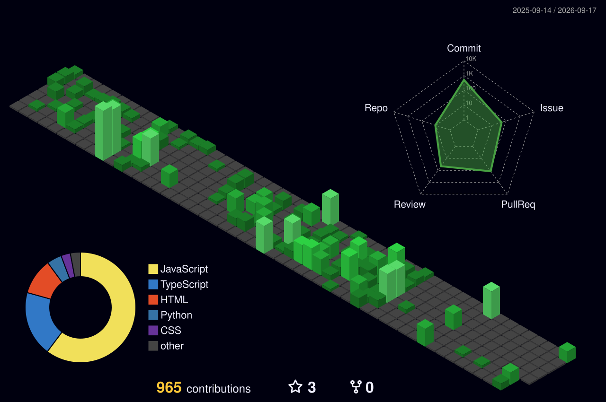

Hi, I'm Valentino Garcia Susini
Full-Stack Software Developer
I am a dedicated full-stack software developer and a 42 Vienna Common Core graduate, with strong expertise in systems programming (C, C++), scripting (Python, Bash), and web technologies (JavaScript, HTTP, CGI).
My hands-on experience includes building HTTP servers from scratch, implementing custom shells, developing graphics engines with OpenGL, and creating sophisticated file system tools. With a keen interest in cybersecurity, network programming, and emerging technologies, I bring both technical depth and practical problem-solving skills. My multilingual abilities (Spanish, English, German) and diverse professional background enable me to thrive in international teams and adapt quickly to new challenges.
About Me
Continuous Learning
Self-directed learning across multiple programming paradigms—from low-level C/C++ systems programming to high-level scripting with Python, web development with JavaScript, and specialized tools like Fortran for scientific computing.
Problem Solving
Proven ability to tackle complex technical challenges, from implementing epoll-based I/O multiplexing for concurrent HTTP servers to developing custom memory management and debugging threading issues in system-level applications.
Resilience
Resilience and perseverance developed through intensive programming curriculum and real-world challenges at 42 Vienna.
Team Collaboration
Effective communication and team collaboration skills with proven conflict resolution abilities in diverse environments.
Technical Skills
Programming Languages
Systems & Tools
Web & Network Technologies
Core Competencies
Education
42 Vienna
Common Core CompletedBachelor/RNCP 6 - Full Stack Software Developer
The curriculum at 42 emphasizes peer learning, where students evaluate each other's work, enhancing communication and teamwork skills. It covers a wide array of technical subjects, including programming languages, algorithms, system administration, and cybersecurity.
- Peer-to-peer learning methodology
- Project-based curriculum
- Focus on algorithms, system administration, and cybersecurity
Universidad de Palermo
2023Bachelor in System Analytics (Online)
Buenos Aires, Argentina
E.S.R.N 123
2019High School Diploma - Specialized in Natural Sciences
Bariloche, Rio Negro, Patagonia, Argentina
Featured Projects
Showcasing my GitHub repositories and technical work
Loading projects from GitHub...
Professional Interests & Specializations
GitHub Contribution Activity

Let's Connect!
I'm always open to discussing new opportunities, collaborating on interesting projects, or simply connecting with fellow developers.
GitHub
github.com/ValGSgitLocation
1020 Vienna, Austria
Phone
+43 676 750 41 83Citizenship
Italy & Argentina